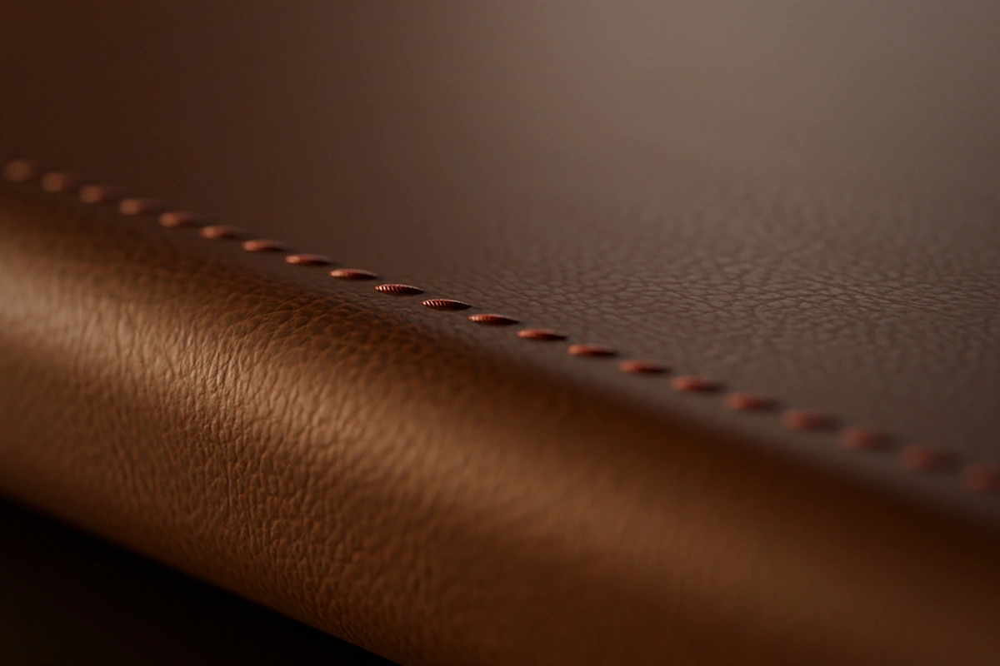

01 · Leather
Cuero real, en cada detalle.
Grano fino y cálido. Va en la barra y en lo que se destaca.
- Color
- #382016 a #75452D
- Grano
- Fino, sin patrón que se repita
- Brillo
- Satinado: rugosidad 0,48–0,68
- Uso
- La barra, lo destacado y la marca